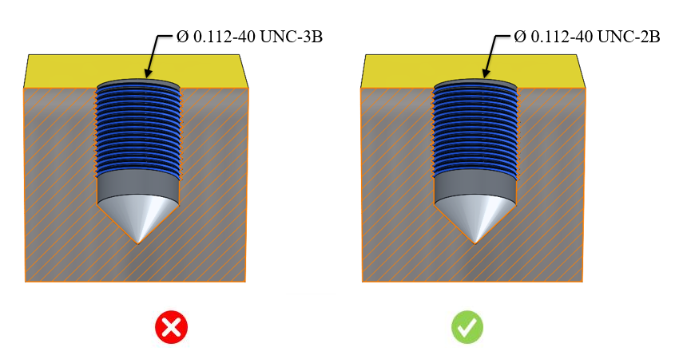

ルールUIで推奨されている構成に基づき、このルールは推奨ねじクラスをチェックします。
クラス1A（外ねじ）とクラス1B（内ねじ）の組み合わせは、迅速かつ容易な組み立てが求められる正しいねじ加工プロセスを実現します。クラス番号が大きくなるほど、はめあいはきつくなります。「A」は外ねじを、「B」は内ねじを示します。
クラス 1B: 非常に緩い公差のねじはめあいです。このクラスは、迅速で容易な組み立ておよび分解に適しています。
クラス 2B: ファスナー性能、製造性、経済性、利便性のバランスが取れた最適なねじはめあいです。商用および工業用ファスナーの約90％がこのねじクラスを使用しています。
クラス 3B: 厳しい公差が求められるファスナーに適しています。安全性が重要な設計要件となる場合に使用されます。これらのねじは、高性能な設備と非常に効率的なゲージ測定および検査システムを用いて製造されます。
一般的な指針として、広く使用されている1Bまたは2Bのねじクラスを使用することが推奨されます。
クラス 1B: 非常に緩い公差のねじはめあいです。このクラスは、迅速で容易な組み立ておよび分解に適しています。
クラス 2B: ファスナー性能、製造性、経済性、利便性のバランスが取れた最適なねじはめあいです。商用および工業用ファスナーの約90％がこのねじクラスを使用しています。
DFMProでは、組織固有の許容ねじ単位およびそれに対応する許容ねじクラスを選択するオプションが提供されており、選択されたオプションに基づいてルール検証が行われます。このルールは、ねじ単位およびねじクラス情報が利用可能なネイティブCADモデルに対して実行されます。
